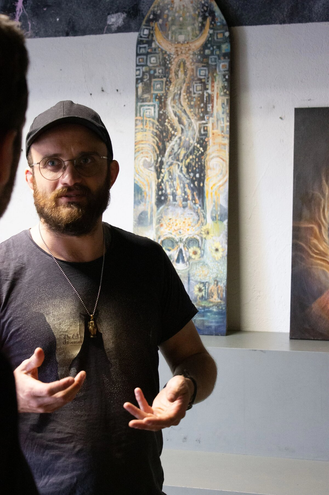

Maler på Mols. Fra visionær kunst mod det klassiske maleri: menneskefiguren, arketypisk symbolik og fortælling.
Painter in Mols, Denmark. From visionary art towards classical painting: the human figure, archetypal symbolism and storytelling.
Se værkerneSee the workVærkerne bliver lagt op i øjeblikket. Skriv til mig, hvis du vil se noget bestemt. The paintings are being added right now. Write to me if you would like to see something in particular.

Jeg arbejder primært med tegning, oliemaling og akryl. Min baggrund ligger inden for den visionære kunst, hvor jeg igennem årene har arbejdet sammen med og modtaget undervisning fra mange af de fremtrædende kunstnere i det felt. I dag hælder jeg i stigende grad imod en mere klassisk tilgang til maleriet, hvor jeg beskæftiger mig med den menneskelige figur, arketypisk symbolik og historie/mytisk fortælling.
Jeg finder inspiration ved de gamle mestre, såsom Rembrandt, Tizian etc. Ved at studere de gamle mestre og naturen, får jeg de værktøjer jeg behøver for at kunne udvikle mig – både som kunstner og som menneske.
Jeg er bosat nær Nationalpark Mols Bjerge, hvor jeg bor med min familie.
Mine originale malerier er til salg, og jeg påtager mig også bestillingsopgaver.
Ræk endelig ud, hvis du er interesseret i mine malerier, eller har idéer til et projekt.
I work with a wide range of materials, primarily acrylics and oils. My background is in visionary art, where I have been taught by many prominent teachers. Today I lean increasingly towards a classical approach to painting, working with the human figure, archetypal symbolism and mythical storytelling.
I draw inspiration from the old masters, but my goal is creative freedom. Studying the old masters and nature gives me the tools I need to keep developing – both as an artist and as a human being. I live in Mols, on the edge of Mols Bjerge National Park.
My original paintings are for sale, and I also take on commissions.